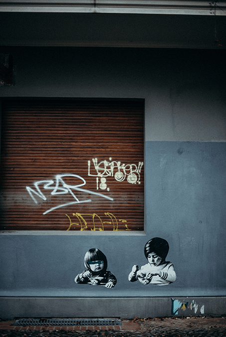
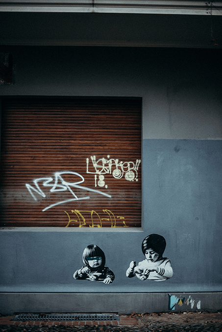

"Graffiti - a form of visual communication, usually illegal, involving the unauthorized marking of public space by an individual or group. Although the common image of graffiti is a stylistic symbol or phrase spray-painted on a wall by a member of a street gang, some graffiti is not gang-related. Graffiti can be understood as antisocial behaviour performed in order to gain attention or as a form of thrill seeking, but it also can be understood as an expressive art form. Derived from the Italian word graffio (“scratch”), graffiti (“incised inscriptions,” plural but often used as singular) has a long history. For example, markings have been found in ancient Roman ruins, in the remains of the Mayan city of Tikal in Central America, on rocks in Spain dating to the 16th century, and in medieval English churches. During the 20th century, graffiti in the United States and Europe was closely associated with gangs, who used it for a variety of purposes: for identifying or claiming territory, for memorializing dead gang members in an informal “obituary,” for boasting about acts (e.g., crimes) committed by gang members, and for challenging rival gangs as a prelude to violent confrontations. Graffiti was particularly prominent in major urban centres throughout the world, especially in the United States and Europe; common targets were subways, billboards, and walls. In the 1990s there emerged a new form of graffiti, known as “tagging,” which entailed the repeated use of a single symbol or series of symbols to mark territory. In order to attract the most attention possible, this type of graffiti usually appeared in strategically or centrally located neighbourhoods." - Britannica There are many different art forms branching from the same art form of graffiti.